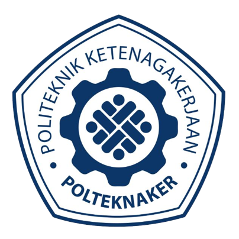
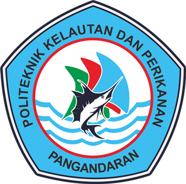

Wadah Silaturahmi, Pengembangan, dan Pengabdian Mahasiswa Kedinasan se-Jakarta Raya.
Forum Mahasiswa Kedinasan Daerah Jakarta Raya (FMKD) adalah organisasi yang beranggotakan mahasiswa/taruna/praja dari Perguruan Tinggi Kedinasan (PTK) yang berasal dari Jakarta, Bogor, Depok, Tangerang, Tangerang Selatan, dan Bekasi.
Sebagai bagian dari FMKI, kami hadir menjadi wadah kolaborasi pemuda untuk mengabdi kepada masyarakat, bangsa, dan negara. FMKD Jakarta Raya terdiri dari dua badan: Dewan Pengawas Daerah (Dewas) dan Dewan Pimpinan Daerah (DPD).
Terwujudnya FMKD Jakarta Raya yang berintegritas, bersinergi, progresif, dan transparan dengan mengedepankan aspek kekeluargaan dan profesionalisme.
Komitmen kami dalam memberikan pengalaman terbaik.
Diskusi interaktif bersama narasumber ahli dan praktisi.
Mempererat solidaritas dan silaturahmi antar anggota.
Sinergi dengan instansi pemerintah untuk pengembangan organisasi.
Studi banding dan belajar langsung dari organisasi lain.

Politeknik Ketenagakerjaan

Politeknik Pembangunan Pertanian Bogor

Politeknik Pengayoman Indonesia

Politeknik Statistika STIS

Sekolah Tinggi Pertanahan Nasional

Politeknik Perkeretaapian Indonesia Madiun

Politeknik Siber dan Sandi Negara

Politeknik Enjinering Pertanian Indonesia

Politeknik Energi Mineral Akademi Minyak Dan Gas Cepu

Politeknik Kelautan Perikanan Karawang

Politeknik Kelautan Perikanan Sidoarjo

Politeknik Teknologi Nuklir Indonesia

Sekolah Tinggi Teknologi Tekstil Bandung

Politeknik Transportasi Darat Bali

Politeknik Penerbangan Medan

Politeknik KP Pangandaran

Politeknik Ahli Usaha Perikanan
PTK Expo adalah ajang tahunan yang diselenggarakan oleh FMKD Jakarta Raya. Acara ini bertujuan memperkenalkan berbagai Perguruan Tinggi Kedinasan (PTK) kepada masyarakat, khususnya calon mahasiswa yang tengah mempersiapkan diri menghadapi seleksi masuk perguruan tinggi.
Target utama peserta dari kegiatan ini adalah siswa/i SMA/SMK/sederajat se-Jabodetabek.

Forum Mahasiswa Kedinasan Indonesia

Forum Kerjasama Rohani Islam Perguruan Tinggi Kedinasan

Badan Kesatuan Bangsa dan Politik Provinsi DKI Jakarta

Sekretariat Daerah Provinsi DKI Jakarta

Dinas Pendidikan DKI Jakarta

Badan Penanggulangan Bencana Daerah DKI Jakarta

Bimbel Akses

Badan Eksekutif Mahasiswa Politeknik Ketenagakerjaan

Badan Eksekutif Politeknik Statistika STIS

Himpunan Mahasiswa Manajemen Sumber Daya Manusia Politeknik Ketenagakerjaan

Himpunan Mahasiswa Jurusan Keperawatan Politeknik Kesehatan Jakarta III

Forum OSIS Jakarta Pusat

Forum OSIS Jakarta Timur

Youth Ranger Jakarta
Keanggotaan Aktif
Lingkup PTK
Kegiatan Terlaksana
Mitra Kerjasama
Peserta PTK Expo
Politeknik Ketenagakerjaan, Jl. Pengantin Ali No.71A, Ciracas, Jakarta Timur.